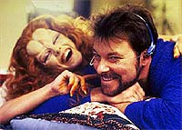
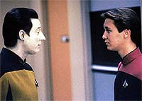
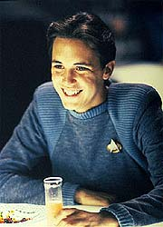
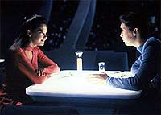

|
MANCHETE
DO EPISDIO
Histria
simplista mostra a tripulao
vulnervel ao mundo das drogas
Episdio
anterior | Prximo
episdio
Sinopse:
Data Estelar: 45208.2.
Durante uma licena em Risa, uma "amiga" de Riker,
chamada Etana, d a ele um interessante presente. um pequeno
jogo que estimula diretamente o crebro, dando uma sensao de
prazer quando ele atinge seu objetivo. Ansioso por dividir sua
descoberta, Riker passa o jogo para Troi logo que ele retorna
Enterprise.
Enquanto isso, a tripulao prepara uma agradvel recepo
surpresa a Wesley Crusher, que est em frias da Academia da Frota
Estelar. Troi passa o jogo a Beverly, e Wesley conhece uma jovem
alferes chamada Robin Lefler. Ele e a jovem sentem uma atrao
imediata um pelo outro. Em pouco tempo os dois j esto combinando
jantar juntos.
 Beverly
chama Data enfermaria para ajudar com um problema, mas quando o
andride chega l, Beverly, Riker e Troi o atacam sorrateiramente,
desativando-o. Ento a mdica chama Picard e Geordi enfermaria,
pedindo ajuda com Data. Quando a dupla chega, todos mentem sobre o
ocorrido, dizendo que o andride simplesmente sofreu um colapso.
Picard deixa Data nas mos do grupo, e Riker convence Geordi a
deixar Data aos cuidados da doutora. Nesse momento, ele aproveita a
deixa para introduzir o engenheiro ao jogo.
Wesley ento vai ao encontro de sua me e a descobre entretida com
o jogo. Ela o convida para jogar, e quando ele recusa, ela se torna
mais insistente. Wes e Robin falam sobre isso durante o jantar, e
Robin conta a ele que a popularidade do jogo est aumentando. A
dupla decide descobrir o que est havendo conectando o jogo a um
computador. Aps desmontar o equipamento, eles descobre que o jogo
causa alteraes qumicas no crebro que fazem com que o jogador
torne-se fisiologicamente dependente e interrompa processos de
raciocnios complexos. Wesley corre para contar sua descoberta ao
capito, sem saber que Picard j era uma das vtimas do jogo.
Wes e Robin logo percebem que o defeito de Data coincide com a
chegada do jogo nave. Eles examinam o andride e descobrem que
ele foi danificado, e que as nicas pessoas a bordo com
conhecimento para fazer tal dano seria Geordi ou Beverly. Passam ento
a tentar consert-lo. Uma vez que o andride seria o nico
tripulante imune aos efeitos do jogo, eles comeam a imaginar se
Data teria sido desativado por alguma razo, e se o jogo teria
outra funo alm de entreter. Horrorizados, eles percebem que
podem ser as nicas pessoas a bordo que ainda no so dependentes
do aparato. Eles decidem fingir jogar o jogo para iludir o resto da
tripulao.
 De
volta ponte, Picard e sua tripulao conhecem Etana, a aliengena
que deu o jogo a Riker. Ela os instrui a distribuir o jogo para
outra nave, e a tripulao logo concorda com seu plano de tomar a
Federao. Logo depois, Wesley mal consegue escapar quando Riker e
Worf tentam for-lo a jogar o jogo. Ele comea a se esconder
pela nave, mas Robin no tem tanta sorte. Aps ser forada a
jogar, ela ajuda o resto da tripulao a localizar Wesley. Logo
que eles conseguem obrigar o rapaz a jogar, Data aparece e cria um
meio de reverter os efeitos do jogo na tripulao. Com a
Enterprise fora de perigo, Wesley d adeus a seus amigos e retorna
Academia.
Comentrios:
"The
Game" definitivamente um episdio que no funciona.
Uma tentativa muito mais refinada sobre o mesmo tema foi executada
em "The Mind's Eye", da
temporada anterior. L as possibilidades de controle da mente foram
trabalhadas de forma muito mais inteligente, assim como os mandantes
do esquema e seus objetivos. Este episdio mais parece uma pardia
do outro, em vez de uma variao do mesmo tema.
 Wesley
Crusher trazido mais uma vez a bordo para reprisar a mesma
atitude que teve enquanto foi um dos regulares a bordo da Enterprise.
Sua funo aqui , essencialmente, ser o menino-prodgio de
sempre e salvar o dia. Como reproduzir o padro s poderia
equivaler a reproduzir o resultado final, Wes continua to chato e
irritante quanto de costume.
Adicionalmente, ele ganha o papel de gal da novela das oito, ao
conquistar a bela e tambm menina-prodgio alferes Lefler, o que no
o ajuda em nada a ser mais interessante do que de costume. Vale
lembrar que nada disso culpa de Wil Wheaton, ator que interpreta
o papel, mas dos roteiristas, que raras vezes acertaram a mo na
hora de escrever para Wesley (uma das excees o episdio "Final
Mission", da quarta temporada). Felizmente, Wesley
receberia a redeno em "The First
Duty", mais a frente no quinto ano.
A premissa repetitiva e irritante. O episdio consiste em
observar a tripulao da Enterprise ficando cada vez mais estpida
ao longo do episdio, fruto do uso do jogo. inconcebvel que
todos eles tenham cado vtimas dessa manipulao antes de notar
que havia algo errado.
A estrutura de manipulao do jogo, ligando-o sensao de
prazer, uma reminiscncia bvia ao uso de drogas. O que
surpreende que uma equipe preparada como a da Enterprise seja to
suscetvel a uma droga pelo simples fato de no a conhec-la.
Usar um equipamento aliengena ligado ao crebro no o que eu
chamaria de atitude 100% segura. Assim se desfaz o castelo de cartas
sobre o qual o episdio est montado. Esse roteiro s pde ser
produzido aps a "idiotizao" de toda a tripulao.
Mesmo utilizando outro dos clichs ligados ao uso de drogas --a
presso que um grupo de pessoas confiveis exerce para que uma
outra arrisque a experincia--, a atitude de Picard e cia.
simplesmente totalmente contrria a suas personalidades.
 Por
fim, o objetivo de Etana to megalomanaco que no vale a pena
comentar. Quando os Romulanos programaram Geordi, em "The
Mind's Eye", eles tinham um plano preciso, limitado,
calculado e com objetivo bem escolhido --dissolver a aliana entre
o Imprio Klingon e a Federao atravs de um incidente diplomtico
de graves propores. Aqui, a mulher quer simplesmente controlar
toda a Federao espalhando seu joguinho pela galxia. Pataquada
o melhor termo para definir essa "brilhante" estratgia.
Citaes:
Riker -
"Chocolate ice-cream, chocolate fudge and chocolate chips. You
aren't depressed, are you?"
("Sorvete de chocolate, cobertura de cholocate e biscoitos de
chocolate. Voc no est deprimida, est?")
Troi - "I'm fine, commander."
("Estou bem, comandante.")
Data - "A conflict has arisen between the planetary
evolution team and the stellar physicists. Each wishes to be the
first to use the thermal imaging array."
("Um conflito surgiu entre a equipe de evoluo planetria e
os fsicos estelares. Ambos querem usar primeiro o conjunto de
sensoriamento termal.")
La Forge - "Well, tell them to flip a coin. We got to work
together on this mission or otherwise we'll never get it done."
("Bem, diga a eles para tirar na moeda. Precisamos trabalhar
juntos nessa misso ou nunca a terminaremos.")
Data - "A coin. Very well, I will replicate one immediately."
("Uma moeda. Muito bem, irei replicar uma imediatamente.")
Trivia:
 Wesley est de volta. Sua ltima apario foi no episdio "Final
Mission", da temporada anterior. Depois deste episdio
Wesley ser visto em mais dois: "The
First Duty", ainda nesta quinta temporada, e mais para
frente em "Journey's End", do stimo ano.
Wesley est de volta. Sua ltima apario foi no episdio "Final
Mission", da temporada anterior. Depois deste episdio
Wesley ser visto em mais dois: "The
First Duty", ainda nesta quinta temporada, e mais para
frente em "Journey's End", do stimo ano.
A
atriz Ashley Judd volta como a alferes Robin Lefler. O plano dos
produtores era traz-la de volta em mais um episdio, "The
First Duty", porm no deu certo.
Katherine Moffat, que aqui interpreta Etana Jol, participou do episdio
"Necessary Evil",
de Deep Space Nine, como uma viva Bajoriana.
Ficha
tcnica:
Histria de Susan Sackett, Fred
Bronson e Brannon Braga
Roteiro de Brannon Braga
Direo de Corey Allen
Exibido em 28/10/1991
Produo: 106
Elenco:
Patrick Stewart como
Jean-Luc Picard
Jonathan Frakes como William Thomas Riker
Brent Spiner como Data
LeVar Burton como Geordi La Forge
Michael Dorn como Worf
Gates McFadden como Beverly Crusher
Marina Sirtis como Deanna Troi
Elenco convidado:
Patty Yasutake
como enfermeira Alyssa Ogawa
Colm Meaney como Miles Edward O'Brien
Katherine Moffat como Etana Jol
Wil Wheaton como cadete Wesley Crusher
Ashley Judd como alferes Robin Lefler
Diane M. Hurley como alferes
Episdio
anterior | Prximo
episdio
|